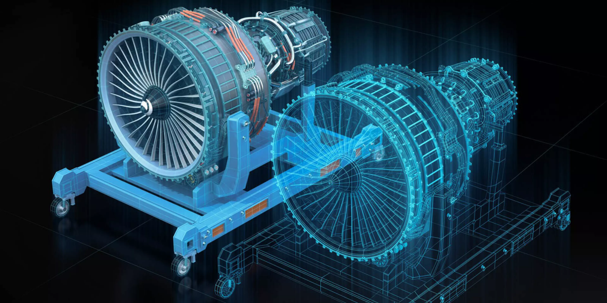

El sistema físico
Puede ser una máquina, una línea de producción o un edificio. Sus características y comportamiento delimitan lo que debe describir el modelo.
Un gemelo digital representa un sistema real mediante un modelo que se alimenta de datos. Permite observar su estado, analizar escenarios y apoyar decisiones durante su ciclo de vida.
Explorar el concepto
El modelo se conecta con observaciones del activo real. Su utilidad depende de la calidad de los datos y de que la representación sea adecuada para la decisión que se quiere tomar.
Puede ser una máquina, una línea de producción o un edificio. Sus características y comportamiento delimitan lo que debe describir el modelo.
Las mediciones, los registros operativos y otras fuentes actualizan la representación y permiten contrastarla con el funcionamiento real.
Integra información del sistema para observar condiciones, evaluar alternativas y simular comportamientos relevantes.
El análisis puede orientar ajustes operativos, mantenimiento y mejoras de diseño; cada decisión necesita validación en su contexto.
Siemens Software, Digital Insights. Abrir el video.
Entrevista de MapScaping sobre modelos digitales e infraestructura. Audio original en inglés.
MapScaping, «Digital Twins» (2020). Ficha del episodio.